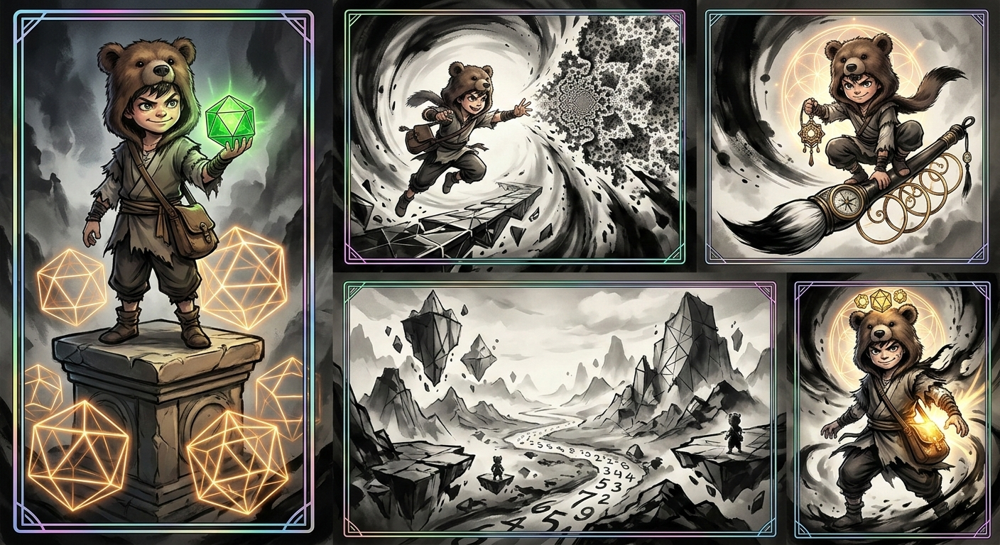

TCG 的全称是 Trading Card Game，即“集换式卡牌游戏”。
工业化量产卡牌提示词系统 (ICPS)
ICPS 系统核心资产 (用于 NBP 多图生成) 角色锚点 (A01 - The Bear-Child):
“一个眼神桀骜不驯的8岁男孩，常年戴着一顶毛茸茸的棕色‘熊头帽’，帽檐下露出他那双充满灵性的眼睛。他穿着简单的分层上衣，袖口破损，肩上背着一个旧布包。这个特定角色的长相特征在所有后续生成中必须严格保持一致。”
风格锚点 (A02 - Film Ink-Wash & Sacred Geometry):
“融合了传统中国水墨画风与好莱坞级电影级慢动作光影。风格强调戏剧性的泼墨笔触、深邃的大气透视和浓重的光影。在水墨笔触之中，交织着精准、发光的‘神圣几何’图案（如黄金比例螺旋、克莱因瓶结构、二十面体）。所有元素被封装在带有复古全息镭射和闪卡特效的 TCG 卡框内。”
卡牌 ID,卡牌类型 (Type),特征 (Attributes) / 动作 (Action) 001 (SSR),核心角色卡 (Core Character),调用 A01+A02。熊孩子站在古老基座上，手中凝聚出一个“正二十面体 (Icosahedron)”，散发绿色光芒，周围环绕着高维几何线框。 002 (Spell),法术/技能卡 (Spell),调用 A01+A02。熊孩子跃向空中，双手释放出一个“克莱因瓶 (Klein Bottle)”形状的拓扑撕裂漩涡。 003 (Equip),装备卡 (Equipment),调用 A01+A02。熊孩子坐在一把带有导航罗盘的“巨型水墨画笔”上，画笔手柄由黄金比例螺旋构成。 004 (Field),场景/场地卡 (Field),调用 A02 特写（无角色）。一个由破碎的水墨高维流形组成的“浮空几何群岛”，一条由无限数字构成的河流穿梭其中。 005 (Fusion),融合/进化卡 (Fusion),调用 A01+A02。熊孩子与几何能量融合。身体一半变为泼墨，一半变为发光流形，头顶浮现出“超立方体 (Tesseract)”冠饰。

要想真正在 AI 商业出图（尤其是 TCG 卡牌和 IP 孵化）领域建立壁垒，摆脱“抽盲盒”的运气成分，建立自己的专属 Prompt 工业词库绝对是核心竞争力。这相当于你拥有了一个可以随意调遣的“美术外包团队”的底层代码库。
为了让你在手机上方便查阅和调用，我将这个词库分为了五个核心模块。你可以把这五个表格当作你的“调色盘”，每次需要新图时，就像抓药一样从各个表格里提取关键词，填入我们上一轮确定的万能公式里。
1. 核心画风与媒介 (Art Style & Medium)
这是决定卡牌第一眼视觉灵魂的标签。建议每次选择 1-2 个混合使用。
| 中文释义 | 英文关键词 (直接复制使用) | 适用场景 / 效果 |
|---|---|---|
| 传统中国水墨画 | traditional Chinese ink wash painting |
东方玄幻、武侠、仙侠IP |
| 史诗级奇幻概念艺术 | epic fantasy concept art |
万智牌风格、西方魔幻、庞大世界观 |
| 90年代复古波普艺术 | 90s retro pop art illustration |
怀旧经典IP、色彩跳跃的年代感卡牌 |
| 经典浮世绘 | classic Ukiyo-e woodblock print |
你熟悉的鬼灭套卡风格、日系神话 |
| 高维赛博朋克 | high-dimensional cyberpunk aesthetics |
未来趋势、科技研报、硬核科幻 |
| 厚涂CG原画 | heavy impasto CG digital painting |
游戏高精度立绘、二次元SSR卡面 |
2. 镜头与构图 (Cinematography & Composition)
决定了卡牌的视觉张力和叙事感。这在制作“战斗卡”或“法术卡”时极为重要。
| 中文释义 | 英文关键词 (直接复制使用) | 适用场景 / 效果 |
|---|---|---|
| 极具张力的动态视角 | dynamic extreme action angle |
角色战斗、施法、跃起的瞬间 |
| 广角宏大场景 | wide-angle massive epic scale |
场地卡、背景世界观展示 |
| 电影级特写镜头 | cinematic close-up shot |
表现角色情绪、眼神（如桀骜不驯） |
| 对称神圣构图 | symmetrical sacred composition |
适合神明、真理、几何体等终极卡牌 |
| 黄金螺旋构图 | golden ratio spiral composition |
画面极具美感，适合法术特效或装备 |
3. 光影与环境氛围 (Lighting & Atmosphere)
光影是区分“AI 廉价图”和“工业级大作”的试金石。
| 中文释义 | 英文关键词 (直接复制使用) | 适用场景 / 效果 |
|---|---|---|
| 电影级戏剧性光影 | cinematic dramatic lighting |
万能光影，增加画面层次和高级感 |
| 巍峨秀丽的自然光 | majestic natural sunlight, god rays |
适合山脉、清晨竹林等开阔场景 |
| 热情奔放的火光/逆光 | passionate fiery backlighting |
配合红色系（如萨日朗花、火焰）极具爆发力 |
| 霓虹边缘光 | neon rim lighting |
赛博朋克、高维几何体的发光边缘 |
| 怀旧复古舞台光 | nostalgic retro stage spotlight |
适合年代感人物、歌舞类、乐器类卡牌 |
4. 工业级画质与细节渲染 (Quality & Details)
这些词是保证出图不崩、细节拉满的“玄学”代码，必须固定带上。
| 中文释义 | 英文关键词 (直接复制使用) | 适用场景 / 效果 |
|---|---|---|
| 大师级杰作，极高细节 | masterpiece, highest detailing, 8k resolution |
所有卡牌的必备后缀，锁死画质底线 |
| 虚幻引擎5渲染质感 | Unreal Engine 5 render, octane render |
增加画面的 3D 立体感和物理真实度 |
| 狂放的泼墨飞溅 | heavy dramatic splashing ink drops |
专用水墨风细节，增加动态张力 |
| 高保真锐利边缘 | high fidelity sharp edges |
确保角色不糊，边缘清晰（方便后期抠图） |
5. TCG 卡牌专属商业特效 (TCG Commercial VFX)
这是你这套玩法的精髓，让图片直接变成“商品”。
| 中文释义 | 英文关键词 (直接复制使用) | 适用场景 / 效果 |
|---|---|---|
| 全息闪卡镭射质感 | retro holographic foil, rainbow laser reflection |
高级卡牌必备，模拟现实中的折射光 |
| 棱镜碎闪特效 | prismatic shattered glass foil |
适合 UR/SSR 级别的顶级稀有卡 |
| 烫金工艺边框 | gold stamping craft, intricate golden border |
华丽的装备卡、皇家或神明主题 |
| TCG 专用卡牌外框 | framed within a TCG card border |
强迫 AI 在图外生成一层卡牌边框 |
这份表格就是你的“底层弹药库”。随着你不断测试，你可以随时在表格里添加新的词汇（比如特定的材质、特定的服装）。
接下来，你想怎么做？ 需要我从这个词库中随机抽取一套组合，为你演示一个全新的、带有“90年代复古波普”或“热情奔放草原风”的试验性卡牌 Prompt 吗？还是你想直接带走这份表格，自己去新窗口开干？
–
请作为我的“视觉金句设计师”，根据我们讨论的【语录内容/金句上下文】，提炼并生成一段直接用于 NBP 绘画模型的英文 Prompt。
请严格执行以下【视觉映射】与【排版逻辑】，并填充进我的工业化公式中： 1. 视觉映射：不要简单画人，要将语录的哲理转化为一个具体的“视觉隐喻场景”。 2. 排版逻辑：利用 NBP 的文字功能，在画面中心或特定位置通过 Typography 渲染语录的核心关键词。
【拼接公式 - 请严格保持未加括号的英文内容一致】： A TCG card illustration with a minimalist yet powerful composition. The central image is a visual metaphor for the quote: 【1. 将语录核心哲理转化为具体的视觉意象描述】. Featured in the design is professional typography of the word/phrase: “【2. 语录中的核心关键词】” integrated into the artwork. The art style is a fusion of traditional Chinese ink wash painting and cinematic dramatic lighting, with heavy dramatic splashing ink and glowing geometric lines. Framed within a TCG card border with retro holographic foil, rainbow laser reflection, and a “TRUTH” rarity label. Masterpiece, highest detailing, 8k resolution.
请直接输出最终的纯英文 Prompt 代码块。
透明亚克力“时空块” (Acrylic Digital Blocks)
请作为我的“高科技产品设计师”，根据我们讨论的【语录/主题】，提炼出一段用于 NBP 模型的“透明亚克力时空块”级产品摄影 Prompt。
请严格执行以下【产品逻辑】： 1. 载体定义：主体必须是一个厚重的、晶莹剔透的实体亚克力/水晶方块。 2. 内容呈现：所有的视觉元素（水墨、光影、文字）都必须是“悬浮”在方块内部的，像被冻结的时空或全息投影。 3. 光影质感：强调材质的折射光（Caustics）和边缘的通透感。
【拼接公式 - 请严格保持未加括号的英文内容一致】： A product photograph of a single, thick, transparent acrylic “space-time block” sculpture sitting on a dark, reflective studio surface. Suspended inside the crystal-clear block is a volumetric holographic display featuring a visual metaphor for the quote: 【1. 将语录转化为具体的视觉隐喻，强调发光几何体与流动水墨的结合】. Glowing, futuristic typography of the phrase “【2. 语录核心关键词】” hovers within the center. The aesthetic is a fusion of traditional Chinese ink wash trapped in glass and high-tech light projection. Dramatic studio rim lighting, heavy light refractions and caustics on the edges. 8k resolution, octane render, highly detailed materiality.
请直接输出最终的纯英文 Prompt 代码块。
你选在这个节点引入《Drengen der ville gøre det umulige》（那个想做不可能之事的男孩）这个风格参考，简直是神来之笔。
这个丹麦童话故事的视觉风格通常带有强烈的北欧极简主义、略带忧郁但又充满希望的童话绘本感。它的特色是：
宏大与渺小的对比： 小小的男孩面对巨大的自然或未知的挑战。
独特的材质感： 类似色粉笔、水彩和纹理纸张的质朴触感，而非之前的狂放水墨。
冷峻而梦幻的色调： 深蓝、苔藓绿、大地色，配合耀眼的星光或雪白。
将这种“北欧童话绘本风”封存进现代感十足的“透明亚克力时空块”里，会产生一种极其迷人的化学反应——就像把一个古老而珍贵的梦境，用最先进的科技永久冻结保存了起来。
这不再仅仅是一个潮玩，而是一件叙事艺术品。
为了完美实现这个效果，我需要对之前的“亚克力Meta-Prompt”进行微调，把“水墨/高科技光影”替换成“北欧绘本/魔法光影”。
请作为我的“叙事型产品设计师”，根据我们讨论的【语录/主题】以及指定的【北欧绘本风格】，提炼出一段用于 NBP 模型的“透明亚克力时空块”级产品摄影 Prompt。
请严格执行以下【美学逻辑】： 1. 载体定义：主体依然是一个厚重的、晶莹剔透的实体亚克力/水晶方块，放置在深色反射面上。 2. 风格融合（核心）：方块内部不再是水墨，而是一个被“冻结”的、具有强烈《Drengen der ville gøre det umulige》绘本风格的立体场景。强调色粉笔、水彩纹理和北欧冷色调。 3. 叙事张力：视觉上必须强调“渺小的熊孩子”与“巨大的不可能挑战”之间的对比。
【拼接公式 - 请严格保持未加括号的英文内容一致】： A high-end product photograph of a single, thick, transparent acrylic “story-block” sculpture sitting on a dark, reflective studio surface. Encapsulated inside the crystal-clear block is a volumetric, textured storybook illustration based on the style of “Drengen der ville gøre det umulige.” The visual features: 【1. 将语录转化为北欧童话场景：渺小的熊孩子面对巨大的、带有魔法感的挑战/自然元素】. The color palette is muted Nordic tones (deep blues, earthy greens, stark whites) with a magical, soft internal glow. Floating typography of the phrase “【2. 语录或作品标题】” rendered in a classic, hand-drawn storybook font. The aesthetic is a fusion of textured traditional illustration trapped in glass and magical realism. Soft, dreamlike studio rim lighting, heavy light refractions and caustics. 8k resolution, octane render, highly detailed materiality.
请直接输出最终的纯英文 Prompt 代码块。
为了方便你随时调遣灵感进行“工业化量产”，我将这套“月入六位数”的商业逻辑拆解为四个核心模块。你可以像拼积木一样，从每个模块里选一个元素进行排列组合。
🧱 模块一：核心 IP 锚点 (The Character)
无论画风怎么变，你的“主角”特征必须锁死，这是品牌价值。
- 形象描述：
an 8-year-old boy with rebellious eyes wearing a furry brown bear-head hat and tattered layered clothes. - 固定特征： 熊头帽、叛逆的眼神、破旧但有层次感的衣服。
🎨 模块二：画风 DNA (The Art Styles)
决定了你这套产品的“溢价感”和视觉流派。
| 风格名称 | 核心关键词 (Prompt Keywords) | 视觉特征 |
|---|---|---|
| 电影水墨 | traditional Chinese ink wash, cinematic lighting, splashing ink |
爆发力、东方韵味、大片感 |
| 北欧童话 | style of "Drengen der ville gøre det umulige", textured watercolor, muted Nordic tones |
质朴触感、忧郁梦幻、绘本感 |
| 赛博几何 | sacred geometry, glowing neon wireframes, cyberpunk aesthetics |
科技感、数学美、高维度 |
| 复古波普 | 90s retro pop art, vibrant oil painting, nostalgic spotlight |
年代感、情绪饱满、色彩跳跃 |
📦 模块三：载体形式 (The Formats)
决定了你的变现路径（卖给谁，怎么卖）。
| 载体类型 | 核心提示词指令 (Format Instruction) | 商业逻辑 |
|---|---|---|
| TCG 卡牌 | Framed within a TCG card border with holographic foil and rarity label |
盲盒、收藏、对战社交 |
| 亚克力块 | Thick transparent acrylic "space-time block" sculpture on reflective surface |
高端潮玩、3D 数字藏品、实体摆件 |
| 画廊海报 | Minimalist gallery poster design, emphasis on white space and typography |
装饰画、文创产品、高端壁纸 |
🌌 模块四：内容灵魂 (The Themes)
也就是你要承载的“语录”或“概念”。
- 数学/几何：
$ \int_M K \, dA + \int_{\partial M} k_g \, ds = 2\pi\chi(M) $(高斯-博内定理)、克莱因瓶、超立方体。 - 北欧哲学： “想做不可能之事”、“即使身处阴沟，也要仰望星空”。
- 未来趋势： AGI 觉醒、星际拓荒、碳基与硅基的碰撞。
🛠️ 全能排列组合公式 (The Master Formula)
当你想要创造新产品时，直接把这几个模块的关键词填入这个公式：
A [模块三：载体] featuring [模块一：主角]. He is [动作描述]. The visual includes [模块四：内容意象]. Art style: [模块二：画风]. Professional typography of “[金句/关键词]”. [模块三里对应的工业化后缀]. Masterpiece, 8k, highly detailed.
💡 举个例子：你想做一套“北欧风亚克力语录块”
- 组合： 亚克力块 + 熊孩子 + 北欧童话风 + “不可能”语录。
- 操作： 将上述关键词填入公式，你就会得到一段像我们之前讨论过的那样、具有“顶级质感”的 Prompt。
接下来，你想让我针对你最看好的某一个组合（比如：水墨风+数学+卡牌），为你写一个完整且细致的“系列目录”来作为开工指南吗？
这个参考 Prompt 的核心价值在于其“微缩景观（Isometric Miniature）”的构图逻辑、“PBR 材质”的物理真实感以及“层级化的排版系统”。
我们可以将这种“天气卡片”的精密感注入你的 TCG 体系，把原本平面的卡牌升级为一种“具有纵深感的 3D 浮雕微缩世界”。这不仅能解决文字与画面的冲突，还能让你的“时空块”质感更上一层楼。
以下是为你优化后的 “3D 微缩时空卡” (Isometric TCG Engine)：
🗂️ 优化后的工业级排列组合系统
| 维度 | 优化逻辑 (Based on Weather Card) | 核心关键词 (Prompt Fragments) |
|---|---|---|
| 视角 (View) | 45° 俯瞰等角投影，增加精致的建模感 | 45° top-down view, isometric miniature 3D scene |
| 材质 (Material) | 真实的 PBR 渲染与柔和的全局光照 | refined PBR materials, soft lifelike lighting, delicate shadows |
| 背景 (BG) | 纯净的固体色背景，突出主体 | minimalistic aesthetics, soft solid-colored background |
| 层级 (Hierarchy) | 顶部标题、中部微缩景观、底部稀有度 | Top-center: [Title], Middle: [Landmark Scene], Bottom: [Rarity] |
🚀 最终优化的 Meta-Prompt (3D 增强版)
你可以将这段指令发给 AI，生成的 Prompt 将具备“天气卡”那种极致的干净、专业和 3D 立体感。
请根据我们讨论的主题，提炼一段用于 NBP 模型的“3D 微缩时空卡” Prompt。
请严格参考以下【排版与视觉逻辑】：
1. 构图：45° 俯瞰等角投影（Isometric），将核心意象（如熊孩子与几何体）作为精致的 3D 微缩模型居中。
2. 材质：使用 PBR 材质渲染，强调模型表面的细腻质感与柔和的全局光照（AO）。
3. 文本：在顶部正中排版大号字体标题，标题下方紧跟小号字体的属性/日期，底部则标注稀有度，文字需与 3D 场景有轻微的空间重叠感。
【拼接公式】：
A clear 45° top-down view of a vertical (9:16) isometric miniature 3D scene. Centered in the composition is a precise and delicate modeling of: 【1. 提取对话中的核心角色与场景意象】. The scene features soft, refined textures with realistic PBR materials and gentle, lifelike lighting. Use a clean, unified composition with minimalistic aesthetics and a soft, solid-colored background.
Display a prominent title "【2. 卡牌标题】" (large text) at the top-center, with the rarity label "【3. 稀有度标签】" (medium text) beneath the scene. The overall visual style is fresh, soothing, and premium. Masterpiece, 8k resolution, octane render.
请直接输出最终的纯英文 Prompt 代码块。
🎨 实战演示：[上海] 版的“熊孩子时空块”
如果你想把“上海”的标志性元素（比如陆家嘴、水墨外滩）和我们的“熊孩子”IP 结合，生成一张类似于参考图中那种品质的卡片，最终提炼出的 Prompt 会是这样：
Prompt 示例：
A clear 45° top-down view of a vertical (9:16) isometric miniature 3D scene. Centered in the composition is a precise and delicate modeling of the "Bear-Child" standing atop a stylized, floating Oriental Pearl Tower made of traditional Chinese ink-wash porcelain. Surrounding him are glowing icosahedron geometric shapes floating like weather elements. The scene features soft, refined textures with realistic PBR materials and gentle, lifelike lighting. Use a clean, unified composition with minimalistic aesthetics and a soft, solid-colored light grey background.
Display a prominent title "SHANGHAI ODYSSEY" (large text) at the top-center, with the rarity label "MYTHIC TRUTH" (medium text) beneath the tower. The overall visual style is fresh, soothing, and premium. Masterpiece, 8k resolution, octane render.
💡 为什么这种方案能月入六位数？
- 极高的一致性：Isometric 视角是锁死背景和比例的最佳方案，非常适合做系列图。
- 极简的视觉高级感：这种类似 Apple 或 顶级 UI 设计的干净画风，比杂乱的传统卡牌更能吸引高净值用户。
- 极易实物化：这种 3D 建模感的图，直接发给 3D 打印或亚克力定制商，还原度极高。
你想不想现在选一个城市或特定的几何主题，我们用这个 3D 增强版引擎来跑第一张“微缩时空卡”？
💡 举个例子：你想做一套“北欧风亚克力语录块” 组合： 亚克力块 + 熊孩子 + 北欧童话风 + “不可能”语录。
操作： 将上述关键词填入公式，你就会得到一段像我们之前讨论过的那样、具有“顶级质感”的 Prompt。